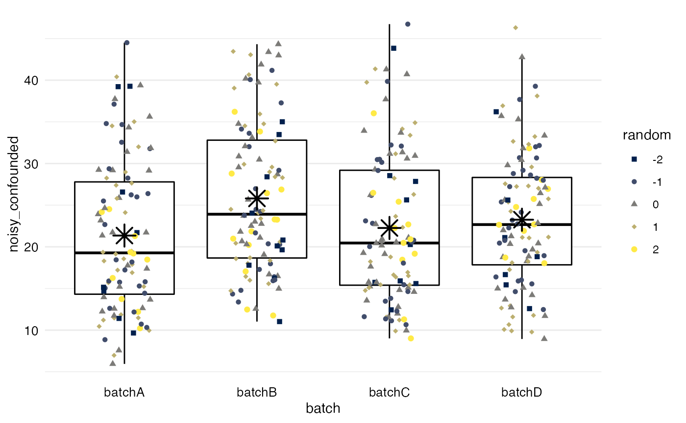

library(batchtma) library(tidyverse) #> ── Attaching packages ─────────────────────────────────────── tidyverse 1.3.0 ── #> ✔ ggplot2 3.3.2 ✔ purrr 0.3.4 #> ✔ tibble 3.0.4 ✔ dplyr 1.0.2 #> ✔ tidyr 1.1.2 ✔ stringr 1.4.0 #> ✔ readr 1.4.0 ✔ forcats 0.5.0 #> ── Conflicts ────────────────────────────────────────── tidyverse_conflicts() ── #> ✖ dplyr::filter() masks stats::filter() #> ✖ dplyr::lag() masks stats::lag() plotbatch <- function(data, variable, color = "person") { data %>% rename(var = one_of(variable), colorvar = one_of(color)) %>% ggplot(mapping = aes(x = batch, y = var)) + geom_boxplot(outlier.shape = NA, color = "black") + geom_jitter(width = 0.2, height = 0, mapping = aes(color = colorvar, shape = colorvar)) + scale_shape_manual(name = color, values = 15:30) + scale_color_viridis_d(name = color, option = "cividis") + theme_minimal() + theme(panel.grid.major.x = element_blank(), axis.text = element_text(size = 10, color = "black")) + labs(y = variable) + stat_summary(geom = "point", fun = "mean", col = "black", size = 5, shape = 8, stroke = 1, fill = "black") }
Add confounder
df <- tibble( batch = rep(paste0("batch", LETTERS[1:4]), times = 100), batchnum = rep(c(1, 5, 2, 3), times = 100), person = rep(letters[1:10], each = 40), true = rep(c(2, 2.5, 3, 5, 6, 8, 10, 12, 15, 12), each = 40), noisy = true + runif(max = true / 3, n = 400) * 4, random = runif(n = 400, min = -2, max = 2), confounder = factor(round(batchnum / 3 + runif(n = 400, max = 3))), noisy_confounded = noisy + as.numeric(confounder) * 3) df %>% plotbatch(variable = "noisy_confounded", color = "confounder")

df %>% mutate(random = factor(round(random))) %>% plotbatch(variable = "noisy_confounded", color = "random")
